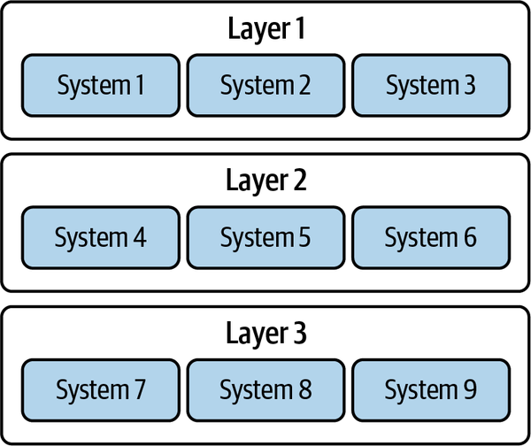
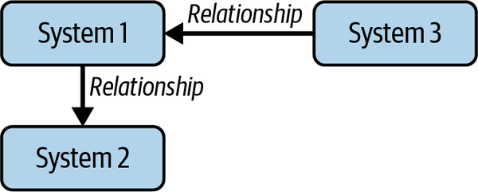
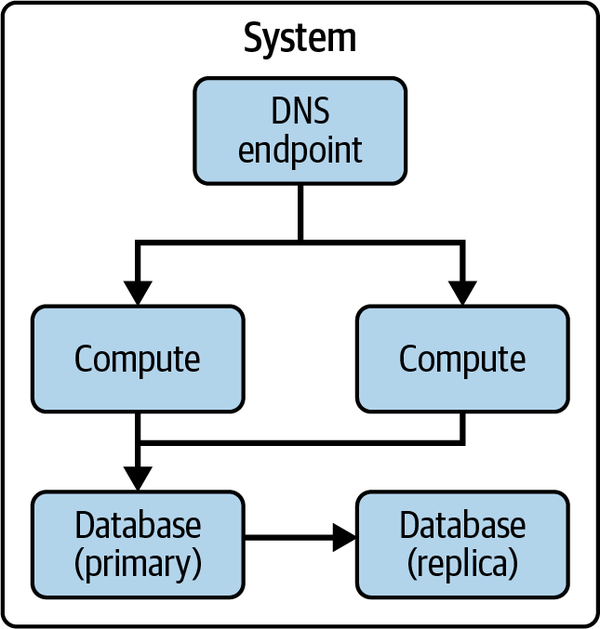
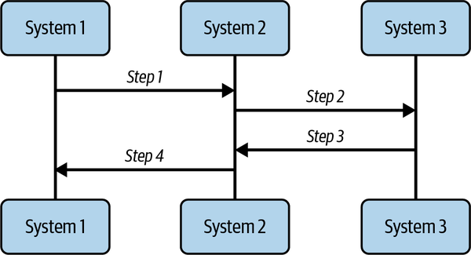

The second enterprise architecture principle in the very short manifesto for effective enterprise architecture is tangible direction over stale documentation.
Tangible in the context of this principle is referring to the metaphorical meaning of having a measurable value rather than the literal meaning of being perceptible by touch. Measurable value in the context of architecture output is synonymous with business value. The architectural direction must have a clear association with business value to be effective. This association is what transforms documentation, a typical vehicle of delivering architectural direction, into tangible direction.
Documentation done well can provide several benefits:
Documents and diagrams help focus conversations and accelerate getting people on the same page to talk through problem-solving. In addition, documentation preserves a historical record that can help teams avoid rehashing the same topic over and over again. It is typically easier to react to something tangible that is written down and/or visualized than talked about in the abstract.
Clear documentation and diagrams facilitate efficient and effective understanding of a technology solution, an architecture domain, or interactions across domains. Clarity reduces operational inefficiency that occurs from misunderstanding or misalignment.
Clear documents allow for identifying areas of risk to mitigate them and enable comparison to established patterns. For example, examining a deployment architecture allows the reviewer to discover whether or not horizontal scaling is possible, and whether or not there are single points of failure that introduce resiliency and reliability risk.
Every architecture document described in Chapter 2 should have an associated business value, as shown in Table 9-1.
| Architecture document | Possible business value |
|---|---|
|
Architecture principles |
X% increased productivity due to consistent and sustainable decision making |
|
Architecture standards |
X% reduction in arbitrary uniqueness, thereby enabling Y% cost savings Z% increased productivity due to conformance and avoidance of compliance issues |
|
Architecture frameworks |
X% increased productivity due to clear guidelines |
|
Architecture patterns / best practices |
X% increased productivity due to reuse Y% cost savings due to avoiding compliance issues |
|
Architecture diagrams |
Depends on the problem being solved as depicted in the diagram—for example, X% cost savings or Y% improvement in risk and compliance posture |
|
Architecture metrics |
X% increase in operational efficiency based on data insights |
As Chapter 6 discussed, architecture strategy is another key architectural output that uses documentation. It can be very difficult to quantify the impact of an architecture strategy, especially when it can take years to deliver against the direction set out in the strategy. To help overcome this challenge, I recommend getting into the habit of sizing the problem that is being solved by the strategy. If you can size the problem—by understanding who or what is impacted, to what degree, and what is being impeded or lost—then you can say that the strategy will provide quantifiable benefits for solving it.
For example, an architectural serverless strategy could solve a problem around maintaining nonserverless infrastructure and frequent disruptions from needing to patch vulnerabilities, which relates to total cost of ownership and productivity. There could be a one-time trade-off of migration or conversion cost to reach a serverless state for existing systems, but overall the strategic benefit adds up over time. Incremental milestones could be defined to show progress against achieving these benefits.
The rest of this chapter is devoted to concepts that allow for tangible direction to be defined and accepted.
One pitfall of architecture is being too theoretical or abstract to be understandable, and therefore being unable to provide tangible direction. Architecture assertions need to be grounded in technical fact for many reasons, including getting alignment based on trust and confidence that the architecture direction is correct.
One popular method to yield technical facts is experimentation. Experimentation can take the form of proof of concepts or pilots to prove out the ideas in the architecture. For example, if the architecture direction is to use serverless technology because it will save labor and time, then conduct an experiment to prove that that is in fact the outcome of using serverless technology, and that it is in fact possible to use serverless technology in the current systems. It is likely that there will be lessons learned from such experiments that will strengthen the overall strategy for how to achieve serverless at scale.
Another method is to review proven industry case studies and demonstrations and use these as proof for an architecture recommendation. This method is not necessarily enough on its own. Experimentation in your own organization’s environment is more definitive proof that an architectural direction is correct.
It is not always possible to experiment to prove out every architecture decision. While it is advisable to experiment with significantly impactful decisions, where experimentation is not possible due to constraints such as time, progress can still be made as long as calculated risks are accepted and potential failure is tolerated as an opportunity to learn and course correct. This ability to accept risk and tolerate failure is a cultural trait.
You’ll notice that I qualified the benefits of documentation with the statement of documentation done well. Chapter 4 already elaborated on the knowledge management and usability aspects of documentation done well. This section elaborates on documentation standards, which define guidelines that allow for common and consistent communications through diagrams.
Such standards or guidelines should cover the following elements of a diagram:
What do all the symbols used in a diagram represent? For example, an arrow: is the arrow documenting a data flow, a network interaction, an ontology, or something else? Is there any meaningful difference between a solid or dashed line used for the arrow? Or how about the type of arrowhead? Is there a specific iconography used? For example, cloud providers such as Amazon Web Services (AWS) provide their own iconography for architecture diagrams.
Keeping accessibility in mind, define consistent aesthetics and purposes. Try not to deviate from societal norms to avoid cognitive dissonance. For example, red usually means bad or high risk, yellow indicates medium bad or medium risk, and green means good or low risk.
Decide on the level of detail for each diagram type and be consistent. For instance, if a diagram gets too cluttered and is hard to follow, it is likely trying to cram too much information into one visual and should be decomposed. A diagram should be intuitive and speak for itself.
See examples such as the C4 model for already defined standards. Let’s look at examples of common architectural views. Figure 9-1 illustrates a generic layered hierarchy view, used to show how capabilities or systems are composable. Figure 9-2 illustrates an ontology or interaction view, used to show how systems relate to one other. Relationships can represent flows including but not limited to data, network, or dependencies. Figure 9-3 is a generic example of a deployment view, which ideally would use the industry standard iconography. Figure 9-4 illustrates sequence views, which show step-by-step interactions between systems and/or users.




There are modeling languages for architecture diagrams such as Unified Modeling Language (UML), PlantUML, ArchiMate, Systems Modeling Language (SysML), and Business Process Model and Notation (BPMN). These modeling languages provide a common, and usually simple, way to describe architectural characteristics of technology solutions and software. In addition, modeling languages are essentially ways to output a diagram through code. As a result, this code can be managed similarly to traditional software code, supporting updates and enabling workflows as needed based on updates and reviews.
To overcome stale documentation, establishing update and maintenance mechanisms that are low effort and responsive to proactive triggers is key. Otherwise, the use of the diagrams in business processes such as architecture decisioning and incident management is suspect.
For example, let’s say an architect defined a sequence diagram that described the integration between two systems to support a workflow. Wouldn’t it be great if as soon as any elements in that diagram change in real-life implementation, the diagram was also updated? One way to ensure that this happens is to include diagrams as part of release packages, such that when change impact analysis occurs naturally as part of release management, any impacted diagrams are also updated. Essentially, diagrams need to be considered as living documents.
Another practical way that works well to keep diagrams up to date is to autogenerate them. This is not possible for every diagram, but it is possible for diagrams such as interaction views and deployment architectures. This method may still require some human oversight and judgment, but it reduces the manual effort that it takes to create and maintain the diagram.
A more novel idea is to make architecture diagrams queryable through code such that you can add a rules engine to glean insights. For example, let’s say you have a dependency diagram that is queryable. Queries can be built that allow you to identify the blast radius of any given dependency and therefore measure the risk and impact of that dependency failing. As another example, imagine that a context view that describes how a system interacts with other systems is queryable. A rules engine could identify whether or not integration patterns are being followed by querying those interactions.
This section examines a few anecdotal case studies and studies the themes that they present.
Archie was an architect who worked at EA Example Company. Archie worked closely with a software engineering delivery team to understand their software products. He documented the current state of the software product using diagrams such as interaction views and sequence views with lengthy explanations. EA Example Company had a culture of frequent releases, and this team was no exception, releasing nearly every single week. Archie found that much of his time was consumed just keeping the current-state documentation up to date. The software engineering team did not include Archie in any decision making for new capabilities.
What happened here?
Archie is an example of the archaeological architect, someone stuck in documenting the current state and who spends more time updating the current state than they do in figuring out the future or target state. Although understanding the current state is important, architecture needs to be future facing and proactive. By only documenting what was or had already happened, Archie was adding limited value.
Key takeaways are summarized as follows.
Do:
Be selective in what is documented.
Maintain documentation so that it doesn’t get stale.
Don’t:
Only document the current state.
Rely on manual effort to keep documentation up to date.
Amber was another architect who worked for EA Example Company. Amber also worked closely with a software engineering team, and she took the time to build a relationship with the product and engineering leads to understand what problems they were facing with their software. She then worked with the team to document their current system architecture and coupled that with the understanding of their problems to put together another diagram with a couple of key changes as a proposal for an aspirational future system architecture. She reviewed the proposal with the team, and they discussed the recommended changes and identified constraints. They deliberated about the constraints to figure out which ones were truly constraints and which ones could be lifted, and then they settled on implementing the changes. She also gained consensus from the product lead to include documentation review as part of their definition of done for both feature delivery and product planning. This allowed for the whole team to feel a sense of ownership of their documentation, and for frequent review and incorporation of documentation into product decision making.
What happened here?
This example details the ambitious architect, someone who focuses documentation on problem-solving, particularly to define the future. Doing so allows for architecture to be proactive and strategic, to determine what is feasible and what is a constraint, and to define a tangible plan of action to overcome any challenges standing in the way of achieving the future state. The ambitious architect has ambitions to help the team use technology to solve future needs, not just the current-state deliberations.
Key takeaways are summarized as follows.
Do:
Build a coalition of relationships with product and engineering teams to define value in documentation.
Use documentation to define future state based on current-state understanding.
Associate future-state architecture with business value.
Don’t:
Limit the future to today’s constraints.
As demonstrated by these anecdotal case studies, it is better to be an ambitious architect, seeking tangible direction for an aspirational future, than an archaeological architect who limits themselves to the current state.
Documentation is necessary and critical to providing a clear understanding of an architecture. This chapter discussed the second recommended enterprise architecture principle, tangible direction over stale documentation, to highlight the need to make documentation as effective as possible.
Tangible direction means that the architecture decision and strategy have a clear associated business value and are grounded in technical fact versus theory. In addition, it is helpful for documentation to adhere to standards for consistent understanding and reduced cognitive load such as symbology, colors, and granularity.
Keeping documentation up to date so that it is not stale is a challenge that can be overcome in a variety of ways, such as defining and executing an update process, using automation to generate diagrams, and making diagrams queryable to allow for rules to prompt an update.
Ambitious architects understand how to use documentation to further their aspirations to achieve future-state architecture. Archaeological architects, on the other hand, spend too much time and effort on the current state without providing direction on the future.
Thus, documentation is extremely important and adds value, but not if it is allowed to get stale, and not if it doesn’t provide tangible direction to achieve a business-beneficial future state.
A business-beneficial future state is also characterized by being secure and compliant. The next chapter dives into the third principle of the very short manifesto for effective enterprise architecture to achieve this characteristic.